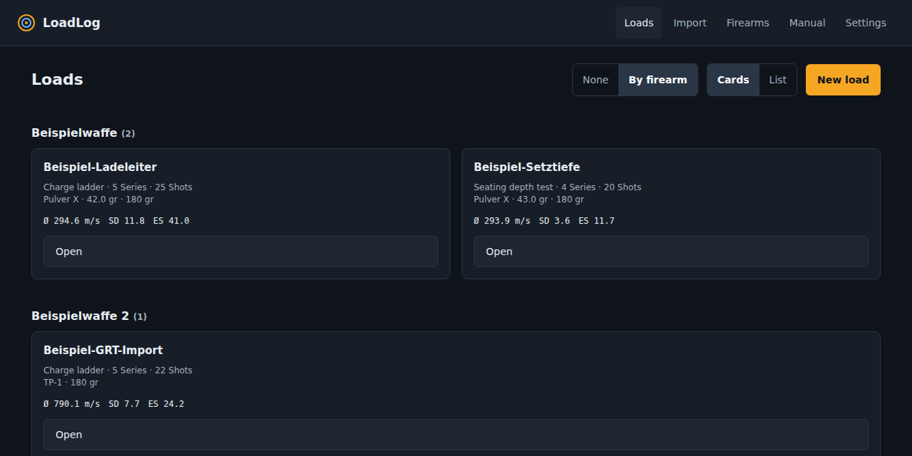
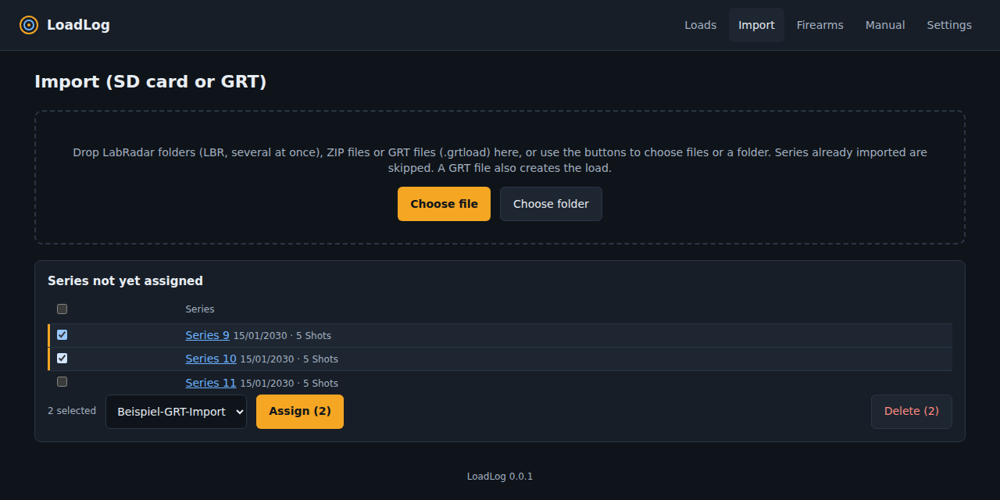
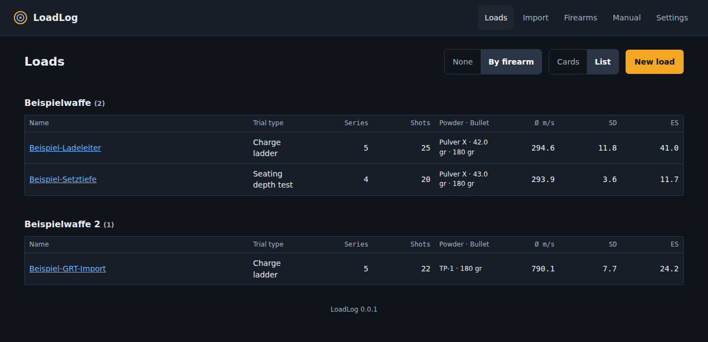
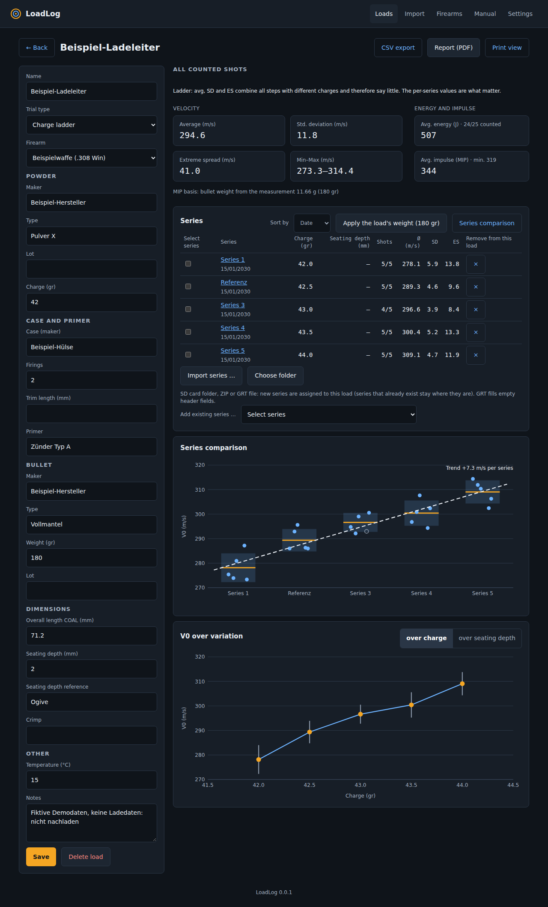
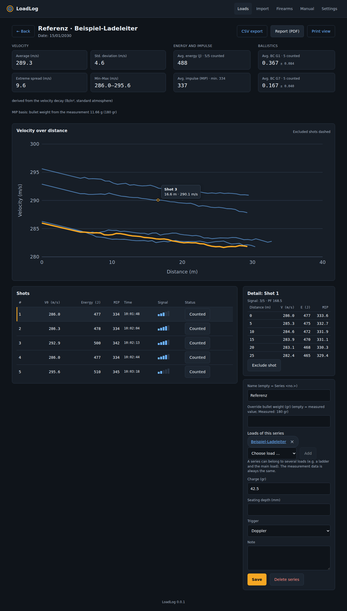
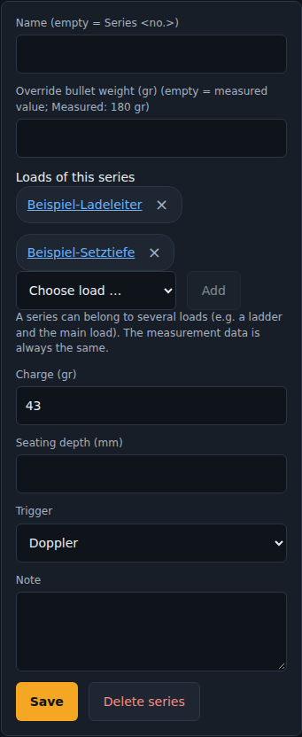
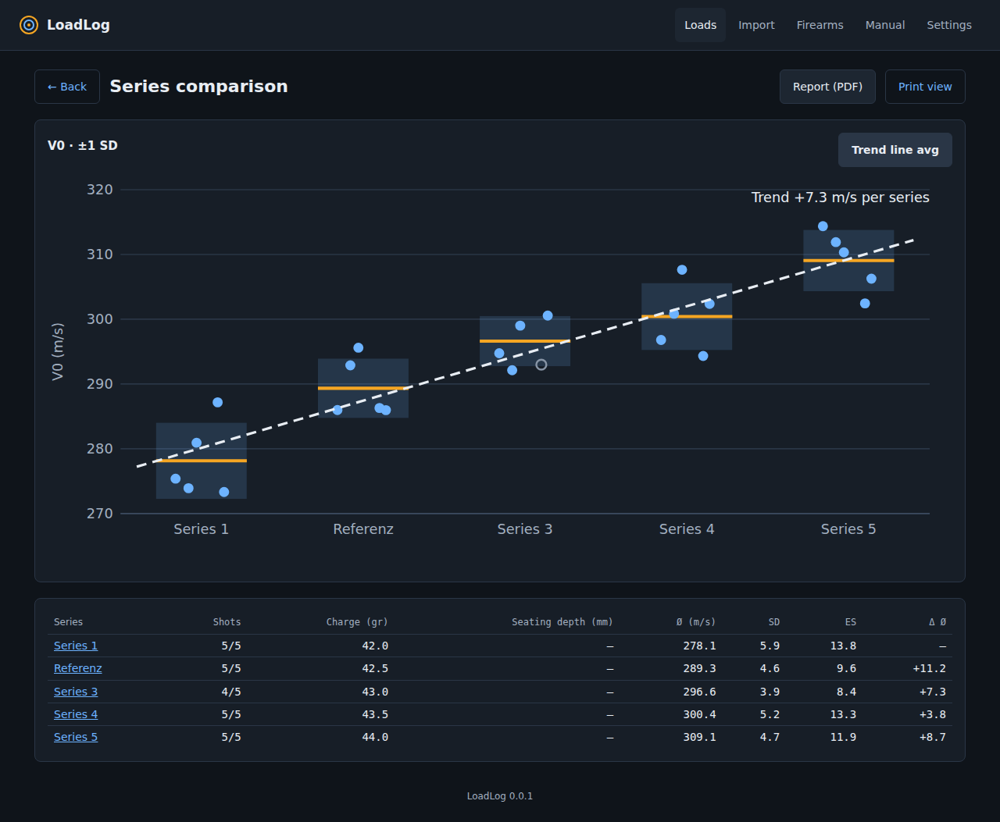
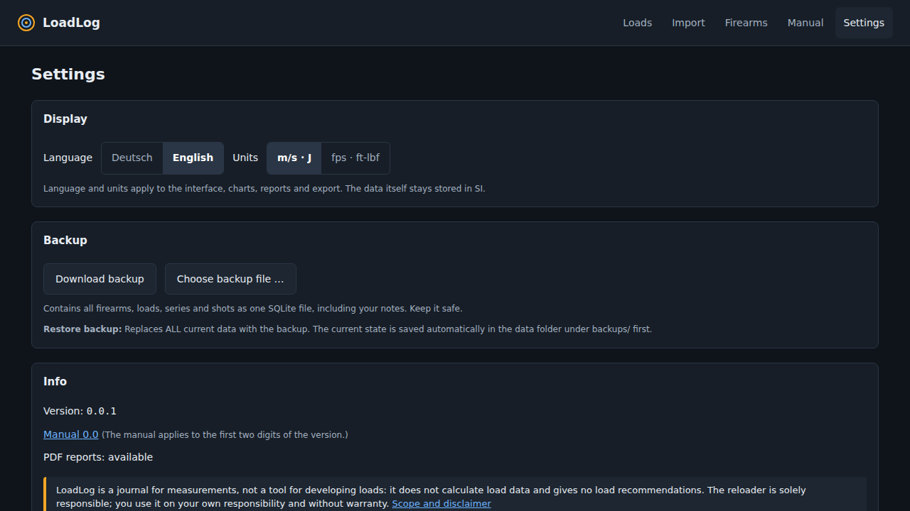

LoadLog Manual
This manual applies to LoadLog 0.0.x.
Introduction
LoadLog is a journal for your loads and the matching measurements of the LabRadar. You record loads with their master data, assign the imported series to them, exclude outliers and see statistics, impulse, ballistic coefficient, velocity curves, comparisons and trends. Reports can be saved as PDF, measurements exported as CSV.

Scope and disclaimer
A journal, not load development
LoadLog records and evaluates what you loaded and measured yourself. It is not a tool for developing loads:
- It does not calculate load data and gives no load recommendations: no powder charges, no starting or maximum loads, no "best" load, no pressure or safety calculations.
- It does not replace the load tables, manuals or specifications of the manufacturers.
- All data on powder, charge, bullet, seating depth etc. is purely your own input. LoadLog checks it neither for plausibility nor for safety.
- Evaluations (average, standard deviation, energy, impulse, ballistic coefficient, etc.) are computed approximations from the measured values.
Disclaimer
You, the reloader, are solely responsible: for your load data (only from reliable, current manufacturer sources), for your care, for the safe handling of firearms and ammunition, and for complying with applicable laws and regulations.
LoadLog is provided free of charge, "as is" and without warranty of any kind (MIT License). Liability for intent and gross negligence, for injury to life, body or health, and under mandatory statutory provisions (e.g. product liability law) remains unaffected. Otherwise, to the extent permitted by law, the authors and contributors are not liable for damages of any kind, in particular property damage and consequential damage, arising from the use or non-use of the software, from errors, incorrect measurements, calculations or displays, or from data loss. Never rely on LoadLog alone for safety-relevant decisions or for competition scoring. For users to whom German law applies, this liability regime applies instead of the warranty and liability disclaimer of the MIT License wherever the two differ. This text is not legal advice.
LabRadar and Gordon's Reloading Tool are trademarks or products of their respective owners. LoadLog is an independent, unofficial project and is not affiliated with them.
Sample data
All values in the figures, examples and demo data (powder, charges, bullet weights, velocities, seating depths) are entirely fictional. They are not load data and not a recommendation. They must not be loaded or replicated.
Installation
LoadLog runs as a single Docker container on a computer or server in your home network.
git clone https://github.com/TyMi/LoadLog.git loadlog
cd loadlog
docker compose up -d --buildThe app is then available at http://localhost:8080. The data lives in a Docker volume (loadlog-data, one SQLite file). By default the container only listens on the machine itself (127.0.0.1). To reach it from other devices in your home network, set the variable LOADLOG_BIND (see Security and network).
| Variable | Meaning | Default |
|---|---|---|
LOADLOG_PORT | Port on the host | 8080 |
LOADLOG_BIND | Address on the host | 127.0.0.1 |
LOADLOG_ALLOWED_HOSTS | Allowed host names, comma-separated (optional, protects against DNS rebinding) | empty (all) |
To update, fetch the new version and run docker compose up -d --build again. Your data is kept; the database is upgraded to the new schema automatically at startup. Make a backup first. The build is largely reproducible: base images are pinned by digest and the Python packages come from the lock file with hash checking (the Debian system packages are not pinned to a version).
Import: SD card and GRT
Open Import. You can drop several sources at once into the area or pick them with Choose file and Choose folder:
- LabRadar folders (
LBRfrom the SD card): drop them in or pick them with Choose folder, also on a Mac. No need to zip anything; several cards at once are fine. - ZIP files containing an
LBRfolder. - GRT files (
.grtload, Gordon's Reloading Tool): they contain the load and the LabRadar measurements. LoadLog creates the load from them (name, powder, bullet, overall length, seating depth, etc.) and assigns the series. This helps when the SD card has already been overwritten.

Assign, undo, delete
New series from folders and ZIPs appear under Series not yet assigned. Tick one or more, choose a load and click Assign. The message offers Undo in case of a slip. Delete removes the ticked series after confirmation; the measurements can always be imported again from the SD card or the GRT file.
Import directly in a load
Every load also has an import. New series are assigned to that load right away. With a GRT file, LoadLog only fills empty master data fields; existing entries are never overwritten.
Duplicates
- The same source is recognised and skipped. You can import an SD card again at any time.
- LoadLog also recognises the same series from different sources (SD card and GRT file): same first shot (±2 seconds), same number of shots and the same V0.
- If the SD card comes after the GRT file, the rounded GRT values are replaced by the more precise card data (including signal strength). Load, name, notes, weight and excluded shots are kept.
- If the GRT file comes after the SD card, it is skipped. Both are shown as a note in the import result.
- The
.lbrfiles (full precision, signal strength) and the track files (velocity over distance) are read. If an.lbris missing, LoadLog uses the rounded values fromReport.csv. - The measuring distances set on the device (Dx1 to Dx5) are detected automatically.
- GRT files contain V0 and the velocities rounded to 1 m/s, plus the track. Signal strength and device number are missing. Defective or implausible shots are discarded and reported as a note.
Loads
A load summarises what you loaded. Choose New load and fill in what you want to record; all fields except the name are optional.
Overview
At the top right you choose the display: Cards or List, and whether the loads are grouped by firearm. The choice is remembered in the browser.


| Area | Fields |
|---|---|
| General | Name, trial type (single measurement, charge ladder, seating test), firearm |
| Powder | Maker, type, lot, charge in grains |
| Case and primer | Case (maker), number of firings, trim length, primer |
| Bullet | Maker, type, weight in grains, lot |
| Dimensions | Overall length (COAL), seating depth in mm, seating reference (e.g. ogive), crimp |
| Other | Temperature, notes |
Manage firearms once under Firearms and pick them in each load. You may enter numbers with a comma or a point.
Series of a load
- You can sort the series by date, charge or name.
- Add: Add existing series puts any existing series into this load, even one that already belongs to another load (note “also in …”).
- Remove: The × in the row only takes the series out of this load. The series itself is kept.
- Deleting a load does not delete series; if they belong to no other load they become unassigned again.
- Apply the load's weight: sets the load's weight on all its series for impulse and energy (see Series and shots). Remove override undoes it.
Series and shots
Open a series to see all shots. The chart overlays the velocity curves of all shots (velocity over distance). The date of the shots is shown once in the header; the shot list only shows the time.

Chart and selection
- Mouse-over: Moving over the chart shows the nearest measuring point with shot, distance and velocity.
- Select a shot: Click a line in the chart or anywhere on a row in the shot list (except on the button). The selected shot is highlighted in orange.
- Exclude: The Counted button in the row excludes an outlier. Excluded shots are always grey and dashed in the chart. Statistics, BC and impulse update immediately; the raw data stays unchanged.
- Signal: The bars (1 to 5) show signal strength. Few bars indicate poor capture.
- Detail: Velocity, energy and impulse at the set distances for the selected shot.
Key figures
| Group | Values |
|---|---|
| Velocity | Average, standard deviation (SD, sample), extreme spread (ES), min–max, each from the counted shots |
| Energy and impulse | Avg. energy and avg. impulse (MIP) with the smallest single value (min.) |
| Ballistics | Avg. BC for G1 and G7 with spread |
Impulse (MIP)
The minimum impulse (MIP) follows the formula of the sport regulations of the German Shooting Federation (Deutscher Schützenbund, DSB), part 2, rule 2.21.1 (the version currently in force applies): MIP = 0.1 × bullet weight in grams × velocity in m/s, without a unit; LoadLog uses V0 for this. Example: 180 grains are 11.66 g, at 300 m/s that gives 349.9. It is shown rounded to whole numbers (350). In the ammunition check under the sport regulations, up to three shots are measured near the muzzle (2 to 3 m distance); a shooter is disqualified if no measurement reaches the required value. LoadLog therefore shows the average and the smallest result (min.) as a cautious indication. With Doppler trigger, V0 is not the muzzle velocity; impulse and energy then do not apply at the muzzle.
The official ammunition check measures the muzzle velocity with devices approved by the DSB. LoadLog does not replace it: the values are your own preliminary check and not proof towards the range officer.
The weight comes from the measurement. Below the figures it says which weight was used. If it differs from the load's weight by more than 1 %, a warning appears. This happens when the device was not switched to the right bullet. If the weight is missing, the impulse cannot be calculated.
Override bullet weight
In the series you can override the weight (in grains). It then applies to impulse, energy and power factor of that series; the measurement data stays unchanged, and leaving the field empty restores the measured value. In the load you apply the load's weight to all series. New series do not take it over by themselves.
Ballistic coefficient (BC)
From the velocity decay over distance, LoadLog calculates the BC per shot for G1 and G7 (ICAO standard atmosphere, unit lb/in²) and shows the average. This needs at least four measuring points over at least 8 m. Shots with too short a tracked distance and excluded shots are left out. The value is an estimate under standard conditions, not a substitute for a measurement under precisely defined conditions.
Name, assignment, loads of the series
On the right you give the series a name (empty = “Series <no.>”) and maintain charge, seating depth, trigger mode and note.

The Loads of this series section lists all loads of the series. Use × to take it out of one and Add to put it into another. The measurement data is always the same; an exclusion or a weight change takes effect in all loads.
Charge ladders and seating depth
LoadLog does not calculate ladders, it presents the measurements. Create a load with the trial type Charge ladder or Seating test, import the series and enter the varied value in each series: the charge for a ladder, the seating depth for a seating test. When importing a GRT file the charge is already filled in.
The load statistics (avg, SD, ES) combine all series. For a ladder they mix steps with different charges and therefore say little; the per-series values and the chart are what matter.
As soon as at least two different values exist, the load shows a chart with the V0 average and ±1 SD over the varied value. The buttons switch between charge and seating depth.
Comparison and trend
Select several series in a load and click Compare selection, or use Series comparison for all of them. Up to 60 series are possible. The chart shows every shot of each series as dots, the average and the ±1 SD band. Open circles are excluded shots. With many series the labels are thinned out.

The trend line avg. is a linear regression through the series averages (in the order shown). The value is the change in mean velocity per series, e.g. due to warming or fouling. With two series it is just a connecting line; it only becomes meaningful with more series. The Δ avg column shows the difference to the previous series. The back button leads to the common load of the series.
PDF reports
The series, the load and the comparison have a Report (PDF) button. The report contains the master data, key figures with impulse and BC, charts and the shot table. It is generated in the container, so it looks the same on every device, and follows the chosen language and unit. Print view opens the same page as HTML for printing in the browser.
If PDF generation is unavailable on your server (missing system libraries), the app shows a note; the print view still works.
CSV export
The series and the load have a CSV export button. It delivers one row per shot with load, series, name, date (yyyy-mm-dd), time (hh:mm:ss), V0, bullet weight, energy, MIP, power factor, signal, status (counted or excluded) and the velocity at each measuring distance.
- The file follows the language and unit of the display. German: semicolon separator and decimal comma; English: comma and point. It opens directly in Excel and LibreOffice, umlauts included.
- Text starting with
=,+,-or@is neutralised so spreadsheets do not execute it as a formula.
Settings: language, units, backup
Under Settings (in the menu at the top right) you find language, units and the backup.

- Display: language (German or English) and units (m/s · J or fps · ft-lbf). The setting is remembered in the browser. Data is always stored in SI units, conversion only happens in the display, so nothing is lost when switching. Reports and export follow the setting.
- Download backup: delivers the complete database (firearms, loads, series, shots, notes) as one file.
- Restore backup: choose a backup file. After a confirmation it replaces all current data. Beforehand LoadLog saves the previous state in the data folder under
backups/, so you can go back. Older backups are upgraded to the current schema automatically; backups from a newer LoadLog version and foreign files are rejected. - Info: version, link to the manual and whether PDF reports are available.
Data and backup
All data lives in one SQLite file: /data/loadlog.sqlite3 in the volume. The easiest way to back it up and restore it is the Settings page. Alternatively you can do it directly on the server (possible while the container is running):
docker compose cp loadlog:/data/loadlog.sqlite3 ./loadlog-backup.sqlite3Restoring by hand: stop the container, copy the file back and start again:
docker compose stop
docker compose cp ./loadlog-backup.sqlite3 loadlog:/data/loadlog.sqlite3
docker compose startDeleting a load does not delete series. Deleting a series removes it with its shots from all loads. The original SD card is not affected; you can import it again at any time.
Versions
LoadLog uses three-part numbers: Major.Minor.Patch, for example 0.0.1. The version is shown in the footer and on the Settings page. This manual applies to the first two digits (Major.Minor); it is therefore served at an address like /manual/0.0/en/. Older addresses without a version (/manual/en/) redirect there. A patch release does not change the manual.
Security and network
LoadLog has no login. Anyone who can reach the address can read and change data and download or upload a backup. Run it only in a trusted home network.
- By default it binds to
127.0.0.1. For access from the home network:LOADLOG_BIND=0.0.0.0 docker compose up -d. - If the app is to be reachable from the internet, put a reverse proxy with authentication in front (e.g. Caddy or nginx with basic auth or a single-sign-on service) and TLS. Never expose the container directly to the internet.
- Uploads are limited to 50 MB per file (backups to 200 MB). The limit is checked against the request size before the body is read (uploads without a length are rejected with 411); ZIPs are only read, never unpacked to disk. When restoring, the file is fully checked and migrated before the running data is replaced.
- Write requests that the browser sends from a foreign web page (
Sec-Fetch-Site: cross-siteorsame-site) are rejected. In addition,LOADLOG_ALLOWED_HOSTS(comma-separated host names) lets you restrict the names under which the app is reachable; this protects against DNS rebinding. - The automatic API documentation is available at
/api/docsand has the same reach as the app. Its Swagger interface loads scripts fromcdn.jsdelivr.net; the app itself loads nothing from the internet.
Troubleshooting
| Problem | Solution |
|---|---|
| Import says “No LabRadar series found” | The folder or ZIP must contain LBR with the SRnnnn subfolders. Check that the measurements were recorded with the SD card inserted. |
| A series does not appear again | It has already been imported (duplicate detection, also between SD card and GRT). The note in the import result names the existing series. |
| Cannot select a folder | Use Choose folder instead of Choose file, or drop the folder into the area. |
| No PDF button | The server lacks system libraries (Pango). The supplied Docker image does not have this problem. |
| Values seem shifted | Doppler trigger: V0 is then not at the muzzle. See Import. |
| Impulse missing or a warning below the key figures | The measurement has no bullet weight, or one that differs from the load's weight. Override the weight in the series or apply the load's weight. |
| No BC shown | Too few measuring points or too short a tracked distance (at least four points over 8 m). Set more or more distant distances on the device. |
| Restoring fails | The file is not a LoadLog backup, is damaged or comes from a newer version. Your existing data stays unchanged. |
| Few signal bars | Check the radar's alignment and distance (LabRadar manual). Exclude the affected shots if needed. |
Glossary
| Term | Meaning |
|---|---|
| V0 | Velocity at the start of the measurement (see trigger) |
| Dx1…Dx5 | Measuring distances set on the device for the velocities Vx |
| SD | Standard deviation of V0 (sample, n−1) |
| ES | Extreme spread: largest minus smallest V0 |
| MIP | Minimum impulse per the sport regulations of the German Shooting Federation (DSB): 0.1 × bullet weight (g) × velocity (m/s), without a unit |
| BC (G1, G7) | Ballistic coefficient for the G1 or G7 drag model, derived from the velocity decay |
| PF | Power factor, calculated by the device at Dx1 |
| SNR | Signal-to-noise ratio of the radar measurement in the track |
| GRT | Gordon's Reloading Tool; .grtload is its file format for loads with measurements |
| COAL | Cartridge overall length |
| Charge ladder | Series with a stepwise varied powder charge |
| Seating depth | How deep the bullet sits in the case, or its distance to the lands, depending on the chosen reference |